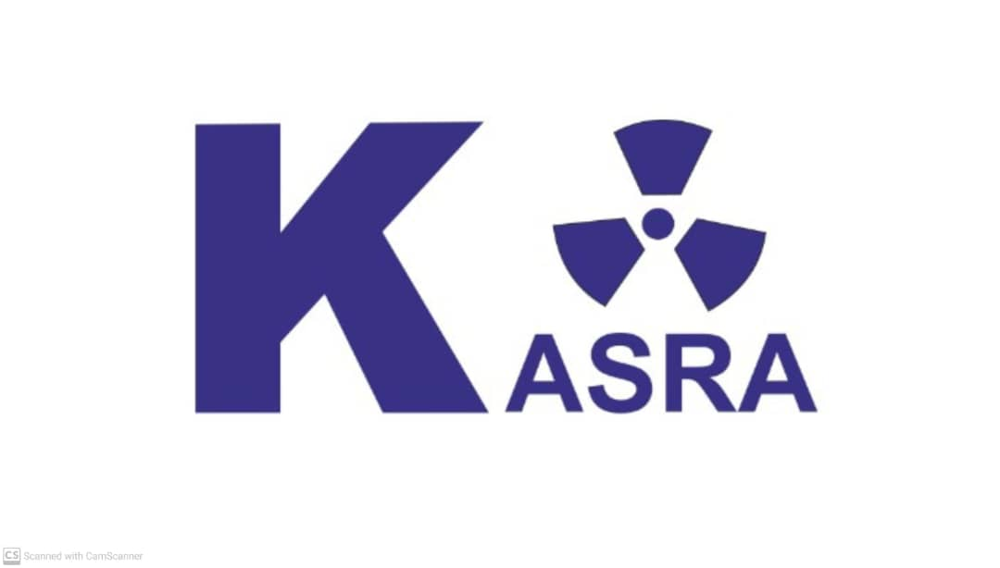
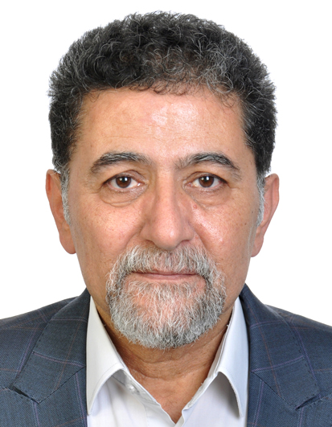
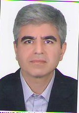

متخصص رادیولوژی و سونوگرافی تشخیصی از دانشگاه علوم پزشکی تبریز با ۲۸ سال سابقه در تصویر برداری پزشکی
ساعات کاری: شنبه تا چهارشنبه: ۸:۳۰ صبح تا ۸:۳۰ شب پنجشنبه: ۸:۳۰ صبح تا ۲:۳۰ بعدازظهر

متخصص رادیولوژی و سونوگرافی تشخیصی از دانشگاه علوم پزشکی تبریز با ۲۸ سال سابقه در تصویر برداری پزشکی
ساعات کاری: شنبه تا چهارشنبه: ۸:۳۰ صبح تا ۸:۳۰ شب پنجشنبه: ۸:۳۰ صبح تا ۲:۳۰ بعدازظهر
تبریز، خیابان ۱۷ شهریور جدید، مجتمع پزشکی کسری
۰۴۱۳۵۵۴۴۳۴۴
kasra.imaging@yahoo.com
شنبه تا چهارشنبه: ۸:۳۰ صبح تا ۸:۳۰ شب
پنجشنبه: ۸:۳۰ صبح تا ۲:۳۰ بعدازظهر